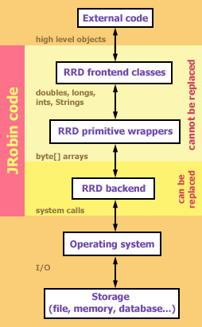

Backends
Introduction
You already know where RRDTool stores its data: the only available storage option is the local file system. And JRobin followed the same approach up to 1.4.0 release. This was something most people expected from any RRD engine. But some users wanted to use JRobin in a runtime environment which prohibited disk usage (J2EE) and forced SQL database as a persistant storage.Although SQL databases in general are not a good solution for storing binary RRD data (it's quite slow to send large binary chunks through the socket back and forth), it still might be handy to have it as an option.
There are other situations when disk storage is not necessary: you might use JRobin as a temporary storage of non-critical data which should not last longer than the JVM itself. In that case, your RRD data may be kept in memory, and once your application exits, this data will be lost. In-memory storage is also an option when you have a lot of unimportant data and frequent RRD updates which might impose a significant performance overhead if ordinary file-based approach is used.
Finally, you might be (and probably you are) a better Java programmer than I am. You feel that JRobin could be faster, and it is quite clear that the speed of low level I/O operations shapes the overall performance of JRobin. Why don't you try to replace the default JRobin I/O engine your own, much faster one?
That is why JRobin core code (jrobin.core.* package) was completely redesigned in 1.4.0 release.
Each JRobin core class belongs to one of these two groups:
- frontend classes: these classes encapsulate basic RRD logic. It's something that cannot be changed or modified in any way.
- backend classes: these classes encapsulate low level I/O operations on various storage types (file system, in-memory storage, SQL storage or some other type). These classes are quite "stupid": they don't know a single thing about the RRD concept.
Frontend and backend classes are clearly separated. All inter-communication is performed by sending byte arrays back and forth.
Existing backends
Out of the box JRobin supports three different backend types. You are free to switch from one type to another completely, or even to mix various backends in your code. Each backend type has a corresponding backend factory. Factories are used to create actual backend objects on the fly. Each backend factory has a name which must be unique. Currently supported factories (names) are:
- FILE: This backend is mostly based on java.io.* package (RandomAccessFile, in fact). This was the only available I/O engine in all JRobin releases prior to 1.4.0 version. In 1.4.0 version, it runs much faster. This I/O engine is not the fastest one, but consumes a small amount of RAM, no matter how big your RRD files are. It should be a primary choice on platforms with less RAM and in applications which handle many RRD files at the same time.
- NIO (default): this backend is mostly based on java.nio.* package (MappedByteBuffer, to be precise). NIO is fast, at least several times faster than FILE, but it takes much more RAM during runtime. NIO caches a lot of data in memory (it is interesting to know that memory is not taken from the JVM's heap but from the underlying operating system directly), that's where its speed comes from. This should be a primary choice on any decent platform with a lot of RAM. However, this backend is still developing - chances are some bugs will appear sooner or later. If you are still suspicios, stick with FILE, it's quite mature and bug-free.
- MEMORY: this backend will not store any data in the local file system. Instead of it, all RRD bytes will be kept in memory. Of course it is fast, but once JVM exits, your data will be lost (unless you preserve it elsewhere before it happens).
Default backend in JRobin 1.4.0
As mentioned before, default backend (named "NIO") is now based on java.nio.* library. What you should know about it:
- It caches data heavily.
- It takes more RAM than backend used in JRobin 1.3.x (named "FILE").
- Addittional memory is taken not from the JVM heap but from the operating system directly. You can easily manage a RRD file of 12Megs with a heap of only 2Megs.
- RRD updates are fast, since all updates affect in-memory cache only.
- By default, the cache will be transferred to the disk once in 5 minutes. This period is configurable. Check javadoc for RrdNioBackend and RrdNioBackendFactory classes.
- The cache is always flushed to the disk when RrdDb object is about to be closed.
- JRobin 1.4.0 switched to java.nio.* package in order to perform low level I/O operations many times faster than before. However, if you ever become suspicios that the new I/O engine has problems never encountered before, it is easy to force JRobin to perform I/O operations in an old-fashioned way (like in 1.3.1 version). Just put the following line of code somewhere early in your application:
RrdDb.setDefaultFactory("FILE");
Switching between backends
As mentioned before, JRobin comes with a NIO backend set as default. If you want to replace it with the old FILE backend, just put the following line in your code, before the very first RrdDb object is created:
RrdDb.setDefaultBackendFactory("FILE");
Instead of "FILE", you could put "NIO", "MEMORY" or the name of your custom backend factory (read further to find out how to create it).
You should know that whenever you create a new RrdDb object or provide a new datasource to RrdGraphDef object without explicit factory name specified as a parameter, default backend factory will be used.
Mixing backends
Sounds funny, but it might be useful. For example, you want to store your mission-critical data in RRD files using NIO, but you want to keep some unimportant RRD data in memory.
Each RrdDb constructor supports optional factory parameter. For example, to create new RrdDb object stored in memory from the definition rrdDef (of type RrdDef), use the following code:
RrdDb rrd = new RrdDb(rrdDef, RrdBackendFactory.getFactory("MEMORY"));
Note that rrdDef object contains path property (a String). The path is interpreted as file path when file-based backends are used (NIO, FILE), but can be anything when other backends are used. For example, if your custom backend stores data to SQL database, the path should be a primary key of the table where all your RRD databases reside. The path (for example: "cpu") can be used later, if you want to access the same RRD data from another RrdDb object:
RrdDb rrd2 = new RrdDb("cpu", rrdBackendFactory.getFactory("MEMORY"));
or if you want to plot some RRD data from the same data (path) by providing a new datasource to rrdGraphDef object (of type RrdGraphDef):
rrdGraphDef.datasource("input", "cpu", "inOctets", "AVERAGE", "MEMORY");
Creating custom backends
It's not that complicated. Suppose that you want to store your RRD data to PostgreSQL (since your runtime environment prohibits file-based backends, like FILE or NIO). The following code has been tested on PostgreSQL 7.3.2 with pg73jdbc3.jar library.
First, let's create the database. From your command line type the following:
createdb -U postgres jrobin
Start your psql client to access the new database:
psql -U postgres jrobin
and create a table namedrrds in it:
create table rrds (id varchar(200) primary key not null, bytes bytea);
This table has just two fields. The first field (id) will be used to identify the RRD and could be used wherever JRobin API requiers path (described in the previous section) argument. The second column (bytes) will hold raw RRD bytes.
Our idea is very simple: when a RRD database is open, we'll load all RRD bytes to memory. All reads/updates will affect RRD data in memory. When a RRD database is closed, we'll send the data back to the database.
To create your custom backend, you'll have to create two new classes:
- RrdSqlBackend, derived from abstract RrdBackend class. Each RrdDb object will be backed by a single RrdSqlBackend object.
- RrdSqlBackendFactory, derived from abstract RrdBackendFactory class. Factory object actually creates RrdSqlBackend objects, one per each RrdDb object.
Here is the code for the first class:
import org.jrobin.core.RrdBackend;
import java.io.IOException;
import java.sql.*;
public class RrdSqlBackend extends RrdBackend {
// database connection parameters
static final String JDBC_DRIVER = "org.postgresql.Driver";
static final String JDBC_URL =
"jdbc:postgresql://database.mydomain.com:5432/jrobin";
static final String JDBC_USERNAME = "postgres";
static final String JDBC_PASSWORD = "123456";
// SQL prepared statements
static final String JDBC_SELECT = "SELECT bytes from rrds where id = ?";
static final String JDBC_INSERT = "INSERT INTO rrds (id, bytes) VALUES (?, ?)";
static final String JDBC_UPDATE = "UPDATE rrds SET bytes = ? WHERE id = ?";
static final String JDBC_DELETE = "DELETE FROM rrds WHERE id = ?";
static {
try {
// pg73jdbc3.jar must be in yuor classpath
Class.forName(JDBC_DRIVER);
} catch (ClassNotFoundException e) {
throw new RuntimeException(e);
}
}
// this is the place where our RRD bytes will be stored
private byte[] buffer = null;
RrdSqlBackend(String id) throws IOException {
super(id);
try {
// first, we check if a RRD with the requested id already exists.
Connection conn = DriverManager.getConnection(
JDBC_URL, JDBC_USERNAME, JDBC_PASSWORD);
PreparedStatement selectStmt = conn.prepareStatement(JDBC_SELECT);
selectStmt.setString(1, id);
ResultSet rSet = selectStmt.executeQuery();
if(rSet.next()) {
// RRD with the given id already exists
// bring RRD data to our buffer
buffer = rSet.getBytes("bytes");
}
else {
// RRD with the given id does not exist
// we'll insert a new row in the table using the supplied id
// but with no RRD bytes (null)
PreparedStatement insertStmt = conn.prepareStatement(JDBC_INSERT);
insertStmt.setString(1, id);
insertStmt.setBytes(2, null);
insertStmt.executeUpdate();
insertStmt.close();
}
selectStmt.close();
conn.close();
} catch (SQLException e) {
throw new IOException("Database error: " + e);
}
}
// this method writes bytes supplied from the JRobin frontend
// to our memory buffer
protected void write(long offset, byte[] b) {
int pos = (int) offset;
for(int i = 0; i < b.length; i++) {
buffer[pos++] = b[i];
}
}
// this method reads bytes requested from the JRobin frontend
// and stores them in the supplied byte[] array
protected void read(long offset, byte[] b) {
int pos = (int) offset;
for(int i = 0; i < b.length; i++) {
b[i] = buffer[pos++];
}
}
// returns the RRD size (since all RRD bytes are
// in the buffer, it is equal to the buffer length
public long getLength() throws IOException {
return buffer.length;
}
// provides enough space in memory for the RRD
protected void setLength(long length) {
buffer = new byte[(int) length];
}
// sends bytes in memory to the database
protected void sync() throws IOException {
// RRD id is here
String id = super.getPath();
try {
Connection conn = DriverManager.getConnection(
JDBC_URL, JDBC_USERNAME, JDBC_PASSWORD);
PreparedStatement updateStmt = conn.prepareStatement(JDBC_UPDATE);
updateStmt.setBytes(1, buffer);
updateStmt.setString(2, id);
updateStmt.executeUpdate();
updateStmt.close();
conn.close();
} catch (SQLException e) {
throw new IOException("Database error: " + e);
}
}
// checks if RRD with the given id already exists in the database
// used from RrdSqlBackendFactory class
static boolean exists(String id) throws IOException {
try {
Connection conn = DriverManager.getConnection(
JDBC_URL, JDBC_USERNAME, JDBC_PASSWORD);
PreparedStatement selectStmt = conn.prepareStatement(JDBC_SELECT);
selectStmt.setString(1, id);
ResultSet rSet = selectStmt.executeQuery();
boolean ok = rSet.next();
selectStmt.close();
conn.close();
return ok;
} catch (SQLException e) {
throw new IOException("Database error: " + e);
}
}
}
And here is the second class:
import org.jrobin.core.RrdBackendFactory;
import org.jrobin.core.RrdBackend;
import java.io.IOException;
public class RrdSqlBackendFactory extends RrdBackendFactory {
// name of the factory
public static final String NAME = "SQL";
// creates bew RrdSqlBackend object for the given id (path)
// the second and the third parameter are ignored
// for the reason of simplicity
protected RrdBackend open(String path, boolean readOnly, int lockMode)
throws IOException {
return new RrdSqlBackend(path);
}
// checks if the RRD with the given id (path) already exists
// in the database
protected boolean exists(String path) throws IOException {
return RrdSqlBackend.exists(path);
}
// returns factory name
protected String getFactoryName() {
return NAME;
}
}
The factory class is simple in most cases. It's only duty is to create backend objects of the given type. Once both classes are provided, you have to register your custom factory within the JRobin framework and set it as default. Fortunately, this can be done with a single line of code:
RrdBackendFactory.registerAndSetAsDefaultFactory(new RrdSqlBackendFactory());
Just be sure to call this method early, before the very first RrdDb object gets created.
That's all there is up to it.
Copyright © 2003, 2004 Sasa Markovic & Arne Vandamme. All Rights Reserved.